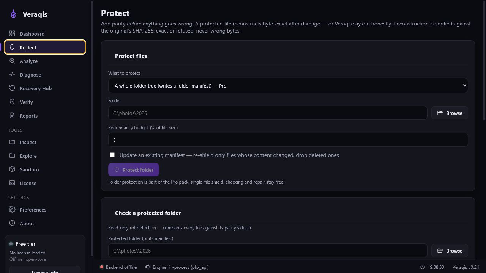

Analyze and diagnose damaged archives and data files, then recover what the surviving bytes can prove — with a verifiable report of exactly what was and wasn't recovered.
Clean rebuild pending — no desktop or CLI package is offered for download today.
Free during public beta. Analysis, recovery planning, structural and semantic recovery, Shield and verification are enabled without an account or license file. The capabilities below are implemented in the current development build; they are not a package you can download yet.
Implemented in the current development build. The desktop app drives the VERAQIS engine through a single, one-directional bridge — the UI renders backend results and computes none of them. These capabilities are implemented and automatically tested; a public package is not yet released.
Read-only audit: rule-keyed evidence (offsets, confidence, byte ranges), health and recoverability scoring.
Per-format defect detection that tells you what is — and isn't — recoverable before you act.
Format-aware structural repair and Tier-3 semantic reconstruction are free during public beta and technically gated to emit only verified bytes.
Save a structured report of a run; every recovered region carries its evidence. See Reports & Verification.
A local history summary of past runs, with a one-click clear. Stored on your machine only.
Offline signed-license support is under development for a later commercial release. No license is required during public beta.

Honest scope. Where a format carries redundancy, veraqis recovers it byte-exact. Where it doesn't, VERAQIS says so — a measured NO-GO is a valid outcome, never a fake recovery.
| Format | Detect | Recovery capability | Tier |
|---|---|---|---|
| ZIP / OPC jar·apk·docx·xlsx·epub | ✓ | EOCD/central-dir rebuild, local-header scan, CRC reconcile, exact part extraction | Exact Tier-3 |
| SQLite | ✓ | Schema + verified rows, WAL overlay, overflow chains, orphan-page relink | Tier-3 |
| ✓ | Object-graph rebuild, Root recovery, verified-stream salvage (graph-proven only) | Tier-3 | |
| TAR · GZIP · DEFLATE | ✓ | Resync salvage, multi-member & continuation recovery, exact structural repair | Exact |
| ISO 9660 | ✓ | PVD⟂SVD reconcile, dual L/M path-table reconstruction (byte-exact twin) | Exact |
| bzip2 · xz | ✓ | Block-independent salvage — each block re-verified by an independent CRC | Exact |
| 7-Zip | ✓ | Signature & start-header repair, verified inventory, intact-folder & non-solid salvage | Exact Tier-3 |
| RAR5 | ✓ | Inventory + CRC localization, exact STORED extraction, recovery-record certificate | Exact Tier-3 |
| Exact-copy reconstruction | ✓ | Restore exact bytes from a same-owner duplicate; placement confirmed independently of the search | experimental |
| Solid LZMA / RAR codec | ✓ | Mid-stream payload — measured NO-GO (LZ-coupled / proprietary); detect + localize instead | measured NO-GO |
Encryption is always detected and abstained — VERAQIS never decrypts, recovers passwords, or bypasses restrictions.
A compact scope summary for evaluators comparing recovery tools.
The beta detects and reports on archives and data formats including ZIP/OPC, TAR, GZIP/DEFLATE, ISO 9660, SQLite, PDF, bzip2, xz, 7-Zip and RAR.
During public beta it recovers structural bytes, decompressed blocks, rows, parts or objects only where the format provides enough surviving proof. No license is required; unsupported or unprovable regions are reported as unknown.
No. Exact-copy reconstruction is experimental, same-owner only, and not promoted as a stable public recovery claim in this beta.
The workflow always begins with a read-only audit. The command reference below documents the development-build CLI surface; no public Windows or Linux package is offered today.
The previous Windows beta was withdrawn after release verification failed. A clean CLI and installer rebuild is in progress; no Windows or Linux download is currently offered. See the release status.
# 1 · audit — free, read-only veraqis analyze backup.zip --format json # 2 · recover — provenance-backed only veraqis recover archive.7z --output out/ # 3 · semantic — Tier-3 rows / objects veraqis recover db.sqlite --semantic sqlite --output out/ # 4 · protect — byte-exact parity sidecar veraqis protect shield data.tar --budget 3 # 5 · next build: whole folders + rot check veraqis protect shield photos/ --recursive veraqis protect check photos/